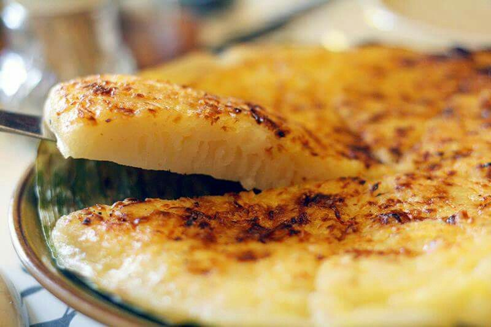

Tara Baya sa Marinduque
Welcome to Marinduque, where pristine beaches meet rich cultural heritage!
Discover the hidden gem of the Philippines – discover Marinduque.
 Marinduque
Marinduque
Welcome to Marinduque, where pristine beaches meet rich cultural heritage!
Discover the hidden gem of the Philippines – discover Marinduque.
Marinduque, officially the Province of Marinduque, is a heart-shaped island province in the Philippines located in the Southwestern Tagalog Region or Mimaropa, formerly known as Region IV-B. The island of Marinduque is located between Tayabas Bay to the north and the Sibuyan Sea to the south. It is located west of Quezon province's Bondoc Peninsula, east of Mindoro Island, and north of Romblon's island province. Some parts of the Verde Island Passage, a protected marine area and the center of the world's marine biodiversity, are also within Marinduque's provincial waters.
Due to its low crime rate statistics, the province of Marinduque was ranked first by the Philippine National Police and Philippine Security Forces as the country's Most Peaceful Province in 2013, alternately ranking with the province of Batanes. Furthermore, for nearly 200 years, the province has been home to one of the country's oldest religious festivals, the Moriones, which is celebrated annually during Holy Week.
The Moriones Festival is an annual folk-religious event held during Holy Week on the island of Marinduque, which is considered to be the geographical center of the Philippines.
The term "Morion" refers to the visor of the helmet that is associated with Roman soldier armor. The term "Moriones" refers to the locals who dress up in Roman soldier costumes and masks from Biblical times.
These dressed-up locals are farmers and fishermen who participate in street theater as a form of penance.
For seven days, from Holy Monday to Easter Sunday, the Moriones scare children and cause a commotion in a reenactment of the search for Longinus, the Roman centurion who pierced the side of the crucified Christ.
The blood that spurted out of Christ's side reached Longinus' one blinded eye in the Bible, and it completely restored his sight. Longinus was converted to Christianity by the miracle, but his fellow centurions scorned him and eventually killed him. Easter Sunday sees the culmination of the locals' retelling of the biblical tale when Longinus is beheaded.
Since its construction in the Spanish era as a fortress in 1792, the Boac Cathedral has been an important part of Marinduque's colorful history and culture.
During a Moro attack in the 1800s, the locals used it as a hideout. As a result, it was also the site of the blessing of the Philippine Revolutionary flag in 1899.
When you enter the church, you will notice beautifully carved doors and red brick exterior walls. The interior and ceiling of the cathedral, inspired by Hispanic Gothic architecture, feature simple yet intricate carvings.
It is regarded as one of the must-see Boac Marinduque attractions due to its cultural and historical significance.
The grand facade and bell tower of the cathedral are made of adobe stones and rough terra cotta.
You can find the kakanin suman in many parts of the Philippines. Suman is usually made up of glutinous rice cooked in coconut milk and wrapped in banana leaves or palm leaf strips. These sticky native rice delicacies are often eaten with sugar or latik. In Marinduque, they have a unique version of suman called tininta suman. It’s known for its vibrant purple hue because it’s made up of violet glutinous rice. Marinduqueños love to pair tininta suman with sampililok or coco jam.
The island province has several native versions of bibingka, a staple rice cake delicacy found all over the Philippines, with Bibingkang Lalaki (male bibingka) being just one of them. Bibingkang Lalaki is also referred to as Bibingkang Boac, named after the province’s capital. It’s a huge portion of bibingka; that’s the size of a pizza. Locals will explain amusedly that this version of bibingka is called as thus because it contains eggs. Bibingkang lalaki also uses coconut wine instead of yeast, which keeps its inside moist after cooking.
Read MoreStay engaged with our latest updates and connect with us through our website to be a part of our vibrant online community.
| contactus@example.com | |
| Phone | 0912-345-6789 |
| Address | #34, Ground Floor, Municipal Hall Boac, Marinduque, Philippines |


Developed By:
JMMontera 2023
Bachelor of Science in Information Technology